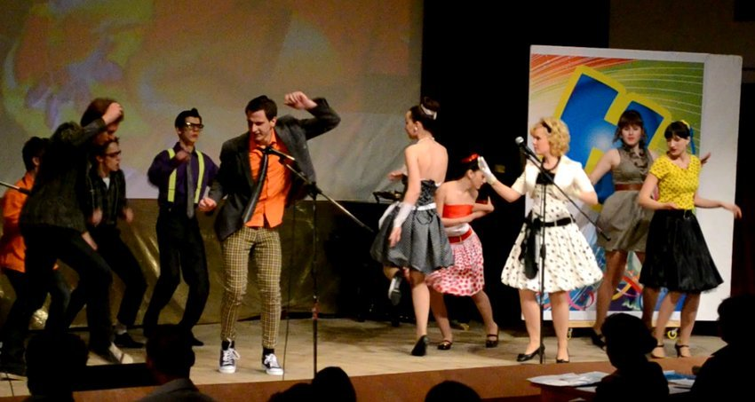
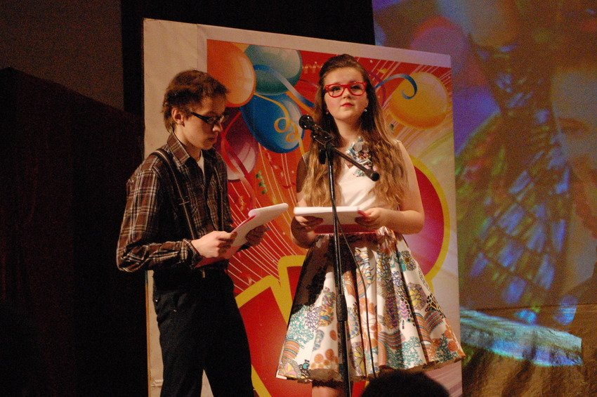
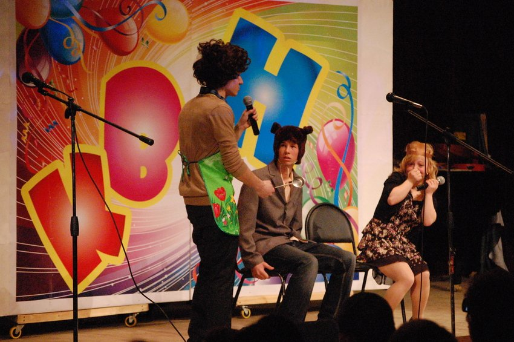
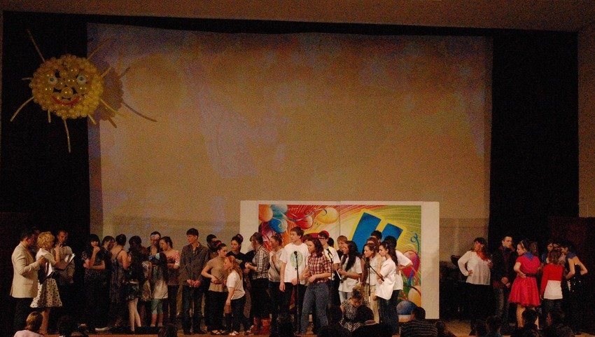
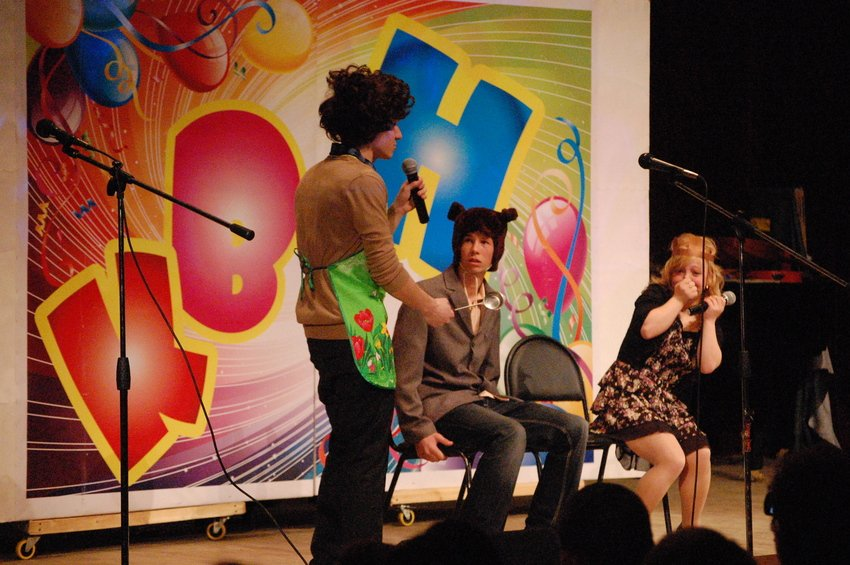
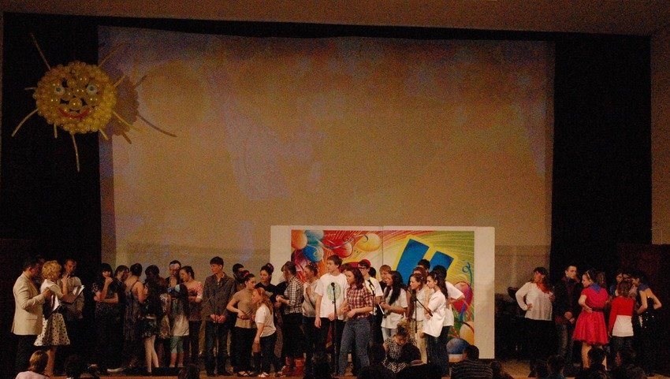
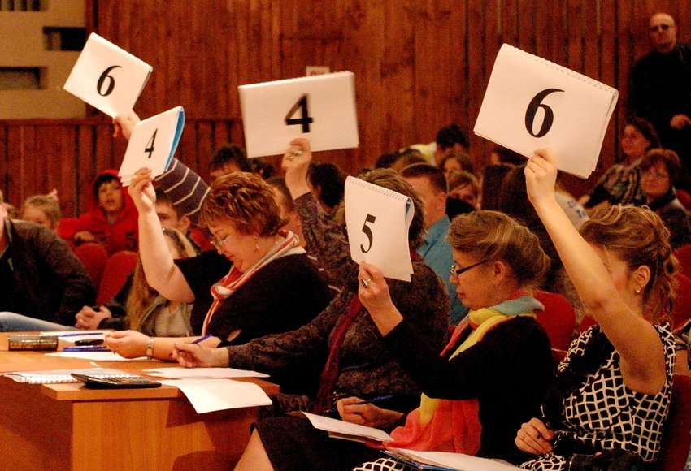
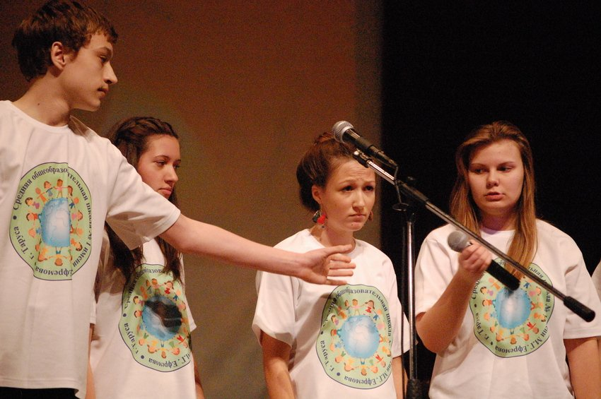
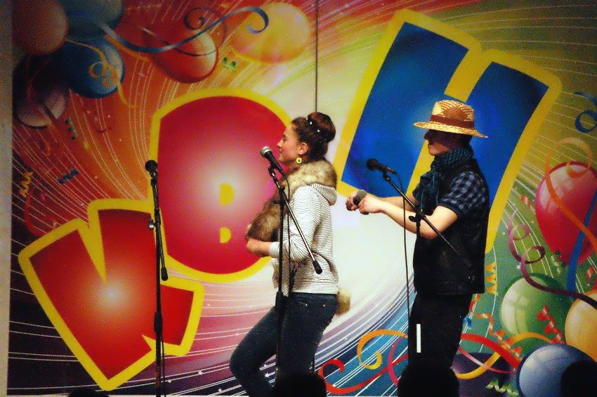

Архив новостей
"Все были на уровне, но каждый на своем"
7 апреля в Тарусском районе состоялся конкурс КВН среди школьных команд района, организованный Молодежным Советом. Если говорить только о самом КВНе, то можно было бы закончить свое повествование названием данной статьи, которое является мнением одного из членов жюри, но нельзя оставить без внимания атмосферу прошедшего мероприятия.
С первой минуты настроение зрителя было создано феерическим танцем, подготовленным Молодежным Советом. Одетые в яркие платья и костюмы в стиле 50-х, жизнерадостные и креативные ребята появились на сцене и разбудили публику, обещая сделать праздник веселым и незабываемым.
Была предложена тема конкурса: “Стиляги”, что означало отказ от повседневности, неординарность взглядов на жизнь и свободу в поведении и мыслях.
Для справки, стиляги — это советская молодежная субкультура, отличающаяся любовью к джазовой музыке и эпатажной одежде, подражающая западному образу мышления, пропагандирующая идеи свободы и индивидуальности. Несмотря на ярко выраженную аполитичность, эта субкультура была воспринята «в штыки» советской властью, как «потенциальная угроза». Но не стоит сетовать о том, что “в тарусском киноконцертном зале стал виден западный след”. Это скорее ветер перемен, который позволяет повышать культурный уровень всех школьных команд.
Выбранная тема обязывала участников быть смелыми и оригинальными, что к сожалению, получилось не у всех. Хотелось бы увидеть побольше новых идей и шуток на злобу дня и поменьше пошлости и быта. Но безусловно, было и то, над чем трудно было не смеяться, как, например, приветствие второй школы, домашнее задание первой школы, остроумный капитан команды из Лопатино, приятно было видеть и самых юных участников, прибывших из Вознесенья... Было много песен, танцев, ярких костюмов. Было видно, что дети репетировали с энтузиазмом, желанием шутить и выступать на сцене. Эта активность нашей молодежи не может не радовать.
 



Команд-участниц конкурса было четыре, друг на друга не похожих и по-своему запоминающихся. Хочется их поблагодарить за хорошее настроение и пожелать в будущем находчивости, творческого подхода и более внимательного отношения к заданной теме, не исключая и внешней атрибутики и стилистики.
Будьте “Стилягами” - неустрашимыми, нестандартными, умными, изобретательными. Надеемся увидеть в будущих выступлениях команд больше актуальных, привязанных к местным проблемам и явлениям шуток, а не копирование старых анекдотов и телевизионных скетчей. Развивайтесь и будьте активными, а главное, оставайтесь собой, и тогда уровень культуры общества с каждым поколением будет повышаться, и нам будет интереснее жить.
В любом случае праздник прошел удачно, зрители и посмеялись, и удивились, но несомненно, были впечатлены увиденным.
И уже хочется поскорее увидеть Новый конкурс КВН!
 Статья и фото-Анастасия Шиловская